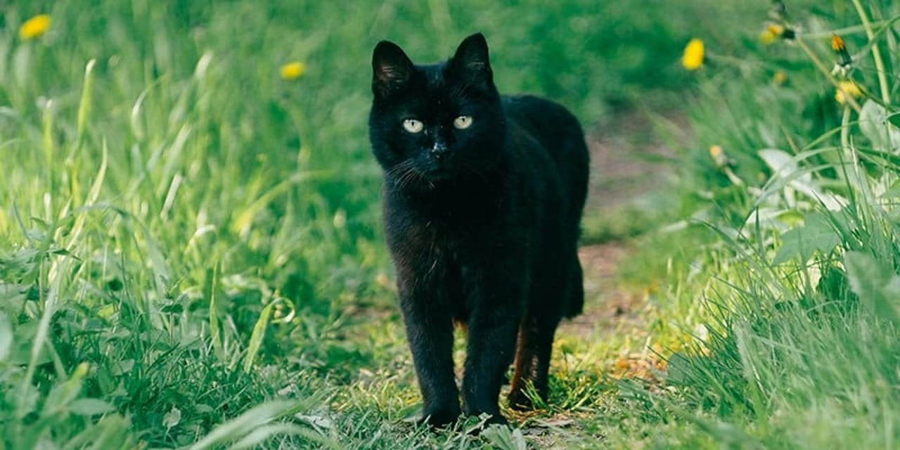

Couple Interests of Mine
Playing guitar
I started playing guitar at age 13. I started with acccoustic guitar. Recently I purchased an electric guitar and I have been practicing that. I love playing guitar because it is one way to get in touch with your feelings.
Hiking
Recently I have been liking to spend time in nature. I feel nice and calm. Scenaries are always beautiful. You get to relax your mind and geet more connected to the earth.
Cats
I like cats and I have one of them. They are warm, fluffy and have their own personality. I love it when my cat sit next to me while I'm doing my own work. I love it when I see my cat is playing. That makes me happy.